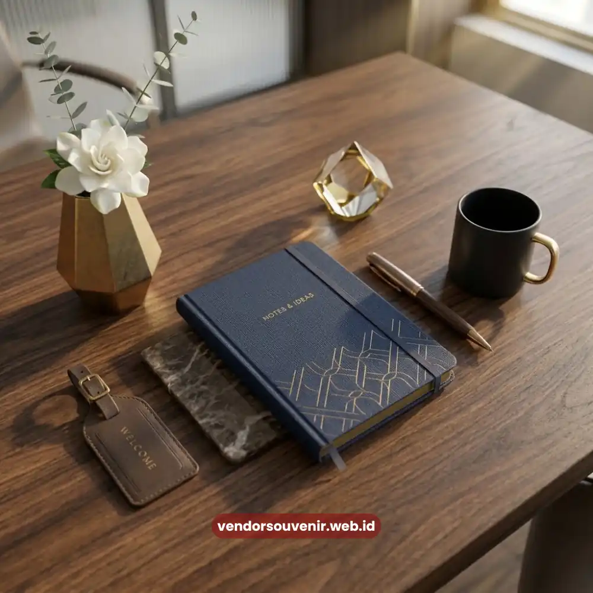

Daftar Isi
Welcome pack kantor custom logo adalah paket sambutan karyawan baru yang dirancang khusus dengan menyertakan identitas visual perusahaan, seperti logo, warna korporat, dan tipografi merek pada setiap barang di dalamnya.
Kustomisasi ini penting karena welcome pack tidak hanya berfungsi sebagai hadiah, tetapi juga sebagai media branding yang digunakan berulang kali oleh karyawan.
Semakin konsisten identitas visual yang ditampilkan, semakin kuat pula asosiasi karyawan terhadap merek perusahaan.
Dalam praktiknya, banyak perusahaan mulai menyadari bahwa welcome pack tanpa sentuhan branding cenderung terasa generik dan mudah dilupakan.
Sebaliknya, welcome pack dengan custom logo yang dirancang matang mampu menciptakan pengalaman visual yang konsisten sejak hari pertama karyawan bergabung hingga masa kerja selanjutnya.
- Custom logo pada welcome pack kantor memperkuat konsistensi identitas merek.
- Elemen visual seperti warna dan tipografi perlu diselaraskan dengan panduan branding perusahaan.
- Kustomisasi dapat diterapkan pada berbagai jenis barang, mulai dari alat tulis hingga apparel.
- Branding yang konsisten pada welcome pack turut membangun kebanggaan karyawan terhadap perusahaan.
- Vendor Souvenir menyediakan layanan kustomisasi logo untuk berbagai jenis welcome pack kantor.
Mengapa Custom Logo Penting dalam Welcome Pack Kantor?
Custom logo penting dalam welcome pack kantor karena menjadi cara paling langsung untuk menghadirkan identitas merek dalam bentuk fisik yang digunakan sehari-hari oleh karyawan.
Ketika logo perusahaan tercetak rapi pada barang seperti notebook atau tumbler, karyawan secara tidak sadar terus terpapar dengan identitas visual tersebut.
Hal ini lambat laun akan memperkuat rasa memiliki terhadap organisasi tempat mereka bernaung.
Selain aspek internal, custom logo pada welcome pack juga berdampak pada persepsi eksternal yang positif.
Ketika karyawan menggunakan barang tersebut di ruang publik, secara tidak langsung mereka turut memperkenalkan merek perusahaan kepada lingkungan sekitar.
Nilai ini menjadikan welcome pack custom logo sebagai investasi branding yang lebih efisien dibandingkan sekadar barang promosi konvensional.
Bagaimana Menyelaraskan Elemen Visual Logo dengan Desain Welcome Pack Kantor?
Menyelaraskan elemen visual logo dengan desain welcome pack kantor dimulai dari penerapan konsisten panduan identitas merek atau brand guideline yang dimiliki perusahaan.
Hal ini mencakup keselarasan warna utama, warna pendukung, jenis huruf, dan tata letak logo pada setiap item yang diproduksi.
Konsistensi ini penting agar kesan visual yang diterima karyawan tetap selaras dengan citra perusahaan di berbagai media lain, seperti website atau materi pemasaran.
Selain warna dan tipografi, penempatan logo pada masing-masing barang juga perlu dipertimbangkan secara cermat agar terlihat proporsional.
Logo yang terlalu besar dapat membuat barang terkesan seperti materi promosi murahan, sementara logo yang terlalu kecil berisiko kurang terlihat.
Keseimbangan proporsi inilah yang membutuhkan pengalaman desain khusus dari tim produksi souvenir korporat.
Material barang turut memengaruhi hasil akhir kustomisasi logo dan kesesuaian teknik cetak yang akan diaplikasikan.
Teknik cetak atau bordir yang dipilih perlu disesuaikan dengan jenis bahan, seperti kain, plastik, atau logam, agar hasil akhirnya tetap tajam dan tahan lama.

Kustomisasi Logo Perusahaan pada Welcome Pack
Apa Saja Jenis Barang yang Cocok Dikustomisasi dengan Logo Perusahaan?
Berbagai jenis barang dalam welcome pack kantor dapat dikustomisasi dengan logo perusahaan, mulai dari perlengkapan kerja seperti notebook, pulpen, dan flashdisk.
Selain itu, kustomisasi juga cocok untuk barang gaya hidup seperti tumbler, totebag, dan apparel seperti kaos atau topi.
Setiap jenis barang memiliki karakteristik teknik cetak yang berbeda, sehingga hasil akhirnya juga bervariasi dari segi tampilan dan daya tahan.
Barang berbahan kain seperti totebag dan apparel umumnya menggunakan teknik sablon atau bordir untuk hasil logo yang lebih tahan lama.
Sementara barang berbahan keras seperti tumbler atau flashdisk lebih sering menggunakan teknik cetak UV atau laser engraving.
Hal ini agar logo dapat menyatu dengan permukaan barang tanpa mudah pudar meskipun digunakan dalam jangka waktu panjang.
Pemilihan jenis barang yang tepat untuk dikustomisasi sebaiknya mempertimbangkan frekuensi penggunaan sehari-hari karyawan di kantor.
Karena semakin sering barang tersebut digunakan, semakin besar pula eksposur branding yang dihasilkan bagi perusahaan.
Bagaimana Welcome Pack Custom Logo Berkontribusi pada Kebanggaan Karyawan terhadap Perusahaan?
Welcome pack custom logo berkontribusi pada kebanggaan karyawan terhadap perusahaan dengan menghadirkan rasa keterhubungan visual yang nyata.
Ini menciptakan ikatan positif antara individu dan organisasi tempatnya bekerja melalui barang-barang yang dapat mereka gunakan dan tunjukkan.
Ketika karyawan menerima barang berkualitas dengan identitas merek yang jelas, muncul persepsi bahwa mereka adalah bagian resmi dari entitas tersebut.
Sebuah entitas yang tidak hanya profesional tetapi juga memiliki citra dan nilai tersendiri yang patut dibanggakan di mata publik.
Rasa bangga ini secara umum berdampak positif terhadap keterlibatan karyawan dalam aktivitas perusahaan serta meningkatkan motivasi kerja harian.
Termasuk kesediaan mereka untuk merepresentasikan merek secara sukarela, misalnya dengan mengenakan apparel berlogo perusahaan pada acara-acara tertentu.
Dampak psikologis semacam ini sulit dicapai hanya melalui komunikasi internal biasa tanpa dukungan elemen fisik yang konkret dari perusahaan.

Layanan Kustomisasi Welcome Pack Vendor Souvenir
Welcome pack kantor dengan custom logo bukan sekadar pelengkap estetika, melainkan strategi branding yang efektif di mata karyawan maupun publik.
Konsistensi visual pada setiap barang yang diberikan turut membangun kebanggaan dan loyalitas karyawan sejak hari pertama bergabung.
Pertanyaan yang Sering Diajukan (FAQ)
Apakah semua jenis barang bisa dicetak dengan logo perusahaan?
Sebagian besar barang dapat dicetak dengan logo perusahaan, namun teknik cetak yang digunakan perlu disesuaikan dengan jenis material agar hasil akhirnya optimal dan tahan lama.
Apakah kustomisasi logo membutuhkan file desain khusus?
Kustomisasi logo umumnya membutuhkan file desain dengan format dan resolusi tertentu agar hasil cetak tetap tajam, dan tim produksi biasanya akan memberikan panduan format file yang dibutuhkan.
Berapa lama proses produksi welcome pack custom logo?
Lama proses produksi welcome pack custom logo bervariasi tergantung jumlah pesanan, jenis barang, dan teknik cetak yang dipilih, sehingga sebaiknya dikonsultasikan langsung dengan tim produksi terkait.
Maroon Souvenir
Partner Corporate Gift terpercaya di Indonesia. Berpengalaman melayani ratusan perusahaan sejak 2018.
Lihat Portofolio Kami